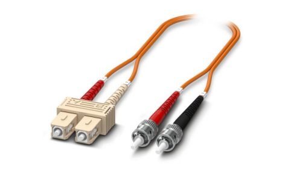
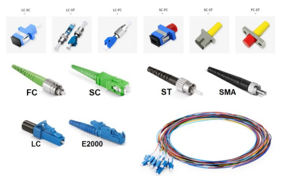

LIU / Patch Panel
FO splice/distributor boxes
MS with powder coating
Din Rail And Compact Rack Mounting.
4 / 6 /12/24/48/96 Port Available Single Mode Multi Mode
Allow maximum two cables entry at Top & Bottom.
SC-LC, SC-ST, SC to MTRJ
Suitable for Media Converter Application
FO Cable
Polymer optical fiber (POF) up to a maximum of 100 Mbps
Polymer-clad fiber (PCF) up to a maximum of 1 Gbps
Glass optical fiber (GOF) multimode up to 10 Gbps
Glass optical fiber (GOF) singlemode up to 40 Gbps
2 / 4 / 6 / 8 / 12 / 24 / 48 / 96 / 144 Fiber cable
Available in Un-armoured & Armoured
FO Patch Cable
Wide range of FO connectors with the pin connector patterns ST, SC, SC-RJ, LC, F-SMA
Fiber types POF, PCF, and GOF (multimode and singlemode)
POF (polymer optical fiber) for short transmission distances up to 75 m and data rates up to max. 100 Mbps
PCF (polymer-clad fiber) for medium transmission distances up to 500 m and data rates up to max. 1 Gbps
GOF (glass optical fiber) multimode for long transmission distances up to 550 m at 10 Gbps
GOF singlemode for up to 50 km and data rates up to 40 Gbps
OM1 OM2 OM3 OM4 OS1 OS2 OS3 OS4


FO Accessories
Connector
Pigtail
Adaptors
SC, SC/APC, LC, LC/APC, MTRJ, ST, FC, SMA
Between series-adapters, Hybrid-adapters
Simplex, duplex or quad versions